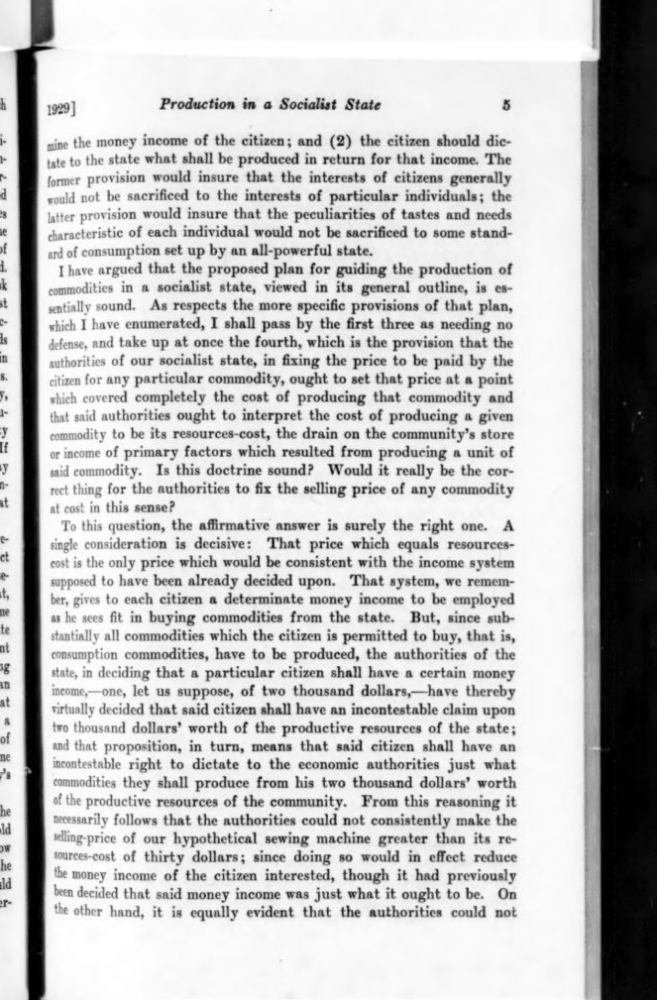

Taylor e a produção num Estado socialista, Whitaker e o dividendo em ações, Portus e a fixação de salários na Austrália
Leitura: 15 min
Taylor imagina preços e custos num Estado socialista, Notz avalia dez anos de cartéis de exportação, Whitaker nega que dividendo em ações seja renda e Portus conta os salários fixados por tribunal na Austrália.


Na noite de 27 de dezembro de 1928, em Chicago, Fred M. Taylor, da University of Michigan, subiu à tribuna da 41ª reunião anual da associação dos economistas americanos para fazer o discurso de presidente. O tema escolhido foi como um Estado socialista deveria decidir o que produzir. Taylor explicou que, como a maioria dos professores de teoria econômica, costumava examinar os problemas do ponto de vista de um Estado socialista, e naquela noite aplicaria o método a uma questão fundamental de qualquer ordem econômica cooperativa. O discurso abre o número de março de 1929 da American Economic Review, o primeiro do volume XIX.
O resto do número é dedicado sobretudo a instituições americanas e australianas. William Notz, de Washington, faz o balanço de dez anos da lei Webb-Pomerene, que permitiu aos exportadores americanos formar associações isentas da lei antitruste. A. C. Whitaker, da Stanford University, dedica o artigo mais longo do número a demonstrar que o dividendo pago em ações não é renda do acionista. George Heberton Evans, Jr., da Johns Hopkins University, procura nas ferrovias e canais de Maryland da década de 1830 a origem das ações preferenciais nos Estados Unidos. G. V. Portus, da University of Sydney, conta como a Austrália passou da greve marítima de 1890 aos tribunais que fixam salários. Na seção de comunicações, Caroline Whitney, de Nova York, aponta erros de definição no uso que Joseph E. Shafer fez da equação de troca no número anterior. Seguem resenhas, entre elas a de John R. Commons e Selig Perlman sobre a obra de Sombart, listas de livros novos, o aviso de que a revista deixa de publicar títulos de artigos de periódicos, documentos e notas.
Como um Estado socialista deveria decidir o que produzir?
Fred M. Taylor (University of Michigan) · “The Guidance of Production in a Socialist State” · pp. 1–8
Taylor parte da economia de iniciativa privada. Nela, a decisão sobre o que produzir é simples: o cidadão obtém uma renda em dinheiro, vai ao mercado e pede o que quiser, e os produtores atendem, desde que ele pague um preço igual ao custo. Para o autor, no Estado socialista o método correto seria, em linhas gerais, o mesmo. O Estado garantiria a cada cidadão uma renda em dinheiro e o autorizaria a gastá-la como quisesse em bens produzidos pelo próprio Estado, o que na prática deixaria o cidadão ditar o que as autoridades devem produzir.
Por Estado socialista o autor entende aquele que é o único produtor responsável, o único autorizado a empregar os recursos da comunidade, que compra com dinheiro os serviços produtivos dos cidadãos e lhes vende os bens. A distribuição da renda caberia às autoridades, que a fixariam no interesse dos cidadãos e do grupo como todo orgânico; por isso os preços resultantes exprimiriam a importância social dos bens. A peça central do plano é a regra de preço: cada bem seria vendido pelo seu custo em recursos, isto é, pelo desgaste que sua produção impõe ao estoque de fatores primários, como a terra, as quedas d’água, os minérios e os vários tipos de trabalho.
Cobrar mais que esse custo reduziria a renda que o Estado já decidiu dar ao cidadão; cobrar menos a aumentaria. A dificuldade, admite Taylor, é que as autoridades precisariam resolver o chamado problema da imputação: saber a importância efetiva de cada fator primário. Ele propõe tentativa e erro. Monta-se uma tabela provisória de avaliação dos fatores, age-se como se ela fosse correta e observa-se o resultado. Fator avaliado alto demais seria poupado e sobraria no fim do período; fator avaliado baixo demais seria usado com prodigalidade e faltaria. Corrigidas as tabelas até não haver sobra nem falta, as avaliações estariam certas.
“Sobra ou falta: uma ou outra resultaria de toda avaliação errada de um fator.” (Surplus or deficit—one or the other of these would result from every wrong valuation of a factor.)
O que dez anos de associações de exportação mostraram?
William Notz (Washington, D.C.) · “Ten Years’ Operation of the Webb Law” · pp. 9–19
A lei de comércio exportador, conhecida como lei Webb-Pomerene, entrou em vigor em 10 de abril de 1918. Ela permite formar associações de exportação e as isenta, com restrições, da lei Sherman contra os trustes. As ideias vinham de antes da guerra, de um estudo do Bureau of Corporations sobre cartéis estrangeiros, e de um relatório de 1916 da Federal Trade Commission que recomendava deixar claro que cooperar na exportação era legal. Para responder ao temor de abusos, a lei restringiu as associações ao comércio exterior e proibiu que elevassem ou deprimissem preços dentro do país.
Notz, que assina de Washington, mostra que 156 supostas associações se registraram de 1918 a julho de 1928, das quais restavam 56. A mortalidade, explica, é em grande parte aparente: muitas empresas se registraram sem entender a lei. Só cerca de vinte associações qualificadas foram dissolvidas, por brigas internas, má gestão ou falta de negócios. As atuais reúnem cerca de 800 empresas, a maioria de matérias-primas como madeira, cobre, zinco, enxofre e fosfato, além de alimentos e produtos químicos.
A virada, para o autor, foi a resposta da Federal Trade Commission a um comitê de produtores de prata, datada de 31 de julho de 1924: uma associação poderia apenas repartir pedidos e fixar os preços a que cada membro venderia no exterior, e poderia até se acertar com estrangeiros fora do mercado americano. Desde então as novas associações foram sobretudo de fixação de preços, e grandes empresas de enxofre, açúcar, cobre, zinco e aço passaram a usá-las, o que Notz considera um desvio da intenção original de ajudar os pequenos exportadores.
O saldo é favorável. As expectativas exageradas não se cumpriram, mas os danos temidos também não, e a lei teria cumprido, dentro de limites razoáveis, o que seu nome promete: promover a exportação.
Por que o dividendo em ações não seria renda?
A. C. Whitaker (Stanford University) · “The Stock Dividend Question” · pp. 20–42
Whitaker começa por uma resolução do Senado americano de dezembro de 1926, segundo a qual as empresas pagavam dividendos em ações para livrar os acionistas do imposto de renda e para comprar concorrentes. O relatório pedido à Federal Trade Commission encontrou 10.245 empresas que pagaram dividendos em ações entre 1920 e 1927, os sete anos seguintes à decisão da Suprema Corte que os declarou não tributáveis. Para quase 5.000 delas, o volume teria sido cerca de nove vezes maior depois da decisão que antes.
Com balanços de uma empresa imaginária, a A. B. Company, o autor mostra o que acontece. Um dividendo de 50% em ações não muda o patrimônio líquido: a empresa não recebe nem entrega ativos. Muda só a contabilidade, porque parte do excedente acumulado passa a capital. O acionista com 100 ações passa a ter 150, mas cada uma vale dois terços do que valia, e sua fração da empresa continua a mesma. Chamar isso de dividendo seria, nas palavras do autor, um erro de terminologia de primeira grandeza.
“Se essa operação gera renda, também gera renda o banqueiro numa partida de cartas que dá cinco fichas brancas em troca de uma vermelha, mesmo quando cinco brancas valem uma vermelha.” (If this operation affords income, so does the giving of five white counters by the banker at a game of cards in exchange for one red one, afford income, even when five whites equal one red.)
Whitaker apoia a maioria da Suprema Corte em Eisner v. Macomber, de 1920, e critica o voto vencido de Brandeis. Admite efeitos reais menores: levar a ação a uma faixa de preço mais negociável, reduzir a taxa percentual dos dividendos em dinheiro para fugir de críticas, aumentar a responsabilidade de acionistas de bancos. Rebate, uma a uma, as objeções, inclusive a de que a ação nova pode ser vendida, e conclui que a resolução do Senado estava errada nas duas razões que dava.
Quando surgiram as ações preferenciais nos Estados Unidos?
George Heberton Evans, Jr. (Johns Hopkins University) · “The Early History of Preferred Stock in the United States” · pp. 43–58
Evans quer fixar a data em que a ação preferencial apareceu no país, as condições que levaram a dividir o capital em classes e a natureza das primeiras emissões. Sua resposta antecipa em mais de uma década o que se supunha: as primeiras emissões teriam sido feitas por companhias de obras públicas de Maryland em 1836; William Z. Ripley, citado em nota, as situava bem mais tarde. O Baltimore and Ohio Railroad e o Chesapeake and Ohio Canal precisavam de dinheiro para terminar suas obras e só o Estado podia dá-lo.
Uma lei de 1836 autorizou Maryland a subscrever ações de duas ferrovias e três canais com um dividendo preferencial de 6% ao ano, a começar três anos depois de cada subscrição. As cláusulas variavam: a preferência do canal acabaria quando os lucros bastassem para pagar 6% a todos, enquanto a do Baltimore and Ohio seria perpétua e sem participação nos lucros adicionais enquanto o Estado detivesse as ações. Uma carta publicada em Georgetown em junho de 1836 protestou contra o “acionista preferencial” monopolizador, e o autor vê no tom dela a prova de que o instrumento era desconhecido.
“...antes de consentir em ser expulsos de seus direitos e interesses na companhia para dar lugar a um ‘acionista preferencial’ monopolizador.” (before they will consent to be thrown out of their rights and interests in the company to make room for a monopolizing, “preferred stockholder.”)
A segunda fase, a partir da década de 1840, foi a venda de preferenciais a particulares por ferrovias em dificuldade, como a Housatonic, a Erie, a Philadelphia and Reading e a Cumberland Valley. A expressão preferred stock apareceria numa lei em 29 de março de 1848. Essas ações eram em geral temporárias, quase sempre sem participação nos lucros adicionais, votavam como as ordinárias e, por serem vistas como forma de hipoteca, provavelmente cumulativas.
Como a Austrália passou a fixar salários por tribunal?
G. V. Portus (University of Sydney) · “The Development of Wage Fixation in Australia” · pp. 59–75
Portus parte do título que H. B. Higgins, presidente do tribunal federal de conciliação e arbitragem, deu a seus artigos na Harvard Law Review: uma nova província para a lei e a ordem. Até 1890 ninguém pensava em fixar salários por ação do Estado. O movimento operário, que ganhou peso com o ouro dos anos 1850, conquistara leis sanitárias e de segurança, a jornada de oito horas pela organização e a restrição da imigração de pessoas de cor, mas salários e horas ficavam para a barganha coletiva.
A greve marítima de 1890 mudou o quadro. A ideia de arbitragem compulsória veio de fora da indústria, de Kingston, ministro da Austrália do Sul, que levou três anos para aprovar a primeira lei, de 1894. Vitória seguiu outro caminho e, em 1896, criou conselhos de salários contra o trabalho exaustivo e mal pago, o sweating. Quando o artigo foi escrito, cerca de três quartos dos empregados australianos estavam sob alguma regulação.
O autor discute as críticas de lentidão, custo e legalismo, e o conflito entre tribunais estaduais e o federal. O centro do artigo é o salário básico. Em 1907, no caso Harvester, Higgins fixou 7 xelins por dia para um homem com mulher e três filhos, com base em nove orçamentos domésticos e nos salários pagos em Melbourne. Para Portus, esse padrão nunca se baseou só no custo de vida e tendeu a congelar o nível de vida dos trabalhadores. Uma comissão federal calculou em 1920 um salário de 5 libras e 16 xelins por semana, e seu presidente, A. B. Piddington, propôs completar um salário menor com um abono por filho, que a Nova Gales do Sul adotou em 1927.
O balanço do autor: a fixação legal eliminou o sweating, reduziu horas e manteve e depois elevou o padrão de vida, mas não trouxe a paz industrial. Ele defende transferir o poder sobre salários para a Commonwealth, o que exigiria mudar a Constituição por referendo; propostas nessa direção já foram recusadas quatro vezes pelos eleitores.
Onde estava o erro de Shafer na equação de troca?
Caroline Whitney (New York City) · “Mr. Shafer on the Equation of Exchange and the Business Cycle” · pp. 76–77
No número de dezembro de 1928, Joseph E. Shafer explicou o ciclo econômico pela expansão e contração do crédito e usou a equação de troca de Fisher, MV + M’V’ = PT. Em M, a moeda em circulação; em V, sua velocidade; em M’, o crédito; em V’, sua rotação; em P, o preço médio; em T, o volume de comércio. Shafer concluiu que o termo do crédito seria positivo na expansão e negativo na depressão, e que, ao longo do ciclo inteiro, a equação se reduziria a MV = PT. Daí sua tese de que abolir o ciclo exigiria eliminar o crédito em todas as suas formas.
Caroline Whitney, que assina de Nova York, aponta inconsistências nessas definições. O M de Shafer seria o usual, a quantidade de moeda em circulação num momento. Mas o M’ só poderia ser negativo se fosse a taxa de variação do crédito, a primeira derivada em relação ao tempo, porque a quantidade de crédito existente multiplicada por sua velocidade nunca é negativa. Isso não é o conceito de Fisher, para quem M’ é o total de depósitos sujeitos a transferência por cheque, nem combina com a definição de M.
“A quantidade de crédito existente multiplicada por sua velocidade de circulação nunca pode ser negativa.” (The amount of credit in existence multiplied by its velocity of circulation can never be negative.)
O que Shafer teria provado, portanto, é que a derivada do termo do crédito se anula no ciclo, ou seja, que M’V’ é constante no período, e não que desaparece. Se não desaparece, a equação não se reduz a MV = PT, e a conclusão de que seria preciso eliminar o crédito não se sustenta. A autora vê confusão semelhante no T, tratado ora como total produzido, ora como sua taxa de variação. Termina com um conselho de método: definir com precisão os termos antes de embarcar numa análise de natureza matemática.
O que mais há na edição?
A seção de resenhas abre com John R. Commons e Selig Perlman, da University of Wisconsin, sobre Der moderne Kapitalismus, de Werner Sombart, obra que os resenhistas recebem com entusiasmo, mas de cuja definição de capitalismo como espírito capitalista discordam. Na teoria, John H. Sherman resenha a edição de S. Leon Levy de textos de Nassau W. Senior; S. S. Garrett, da Cornell University, The Principles of Wages, de W. L. Valk; Paul T. Homan, também da Cornell, a história do pensamento econômico americano de Ernest Teilhac; e Frank H. Knight, da University of Chicago, a teoria do capital e do lucro de Christian Cornélissen. Na história econômica, Abbott Payson Usher, de Harvard, trata de Modern Capitalism, de Henri Sée; Harry M. Cassidy, da Rutgers, de International Economic Relations, de John Donaldson; e H. Heaton, de Minnesota, de The Prosperity of Australia, de F. C. Benham.
Seguem W. A. Mackintosh, da Queen’s University, sobre a cooperação dos produtores de trigo do oeste do Canadá; D. Philip Locklin e Stuart Daggett sobre transportes; Malcolm Keir sobre o comércio de produtos básicos; Harvey E. Fisk, do Bankers Trust Company, sobre os testes de títulos de governos estrangeiros de Ernest M. Patterson; Myron W. Watkins sobre os aspectos legais das associações comerciais; B. M. Squires sobre A Theory of the Labor Movement, de Perlman; H. A. Logan, Paul H. Douglas e Edward Berman sobre trabalho; H. H. Preston e Ray B. Westerfield sobre bancos; e G. O. Virtue sobre a tarifa dos óleos animais e vegetais. A seção de periódicos anuncia que a revista deixa de publicar títulos de artigos, serviço que passa à nova Social Science Abstracts. Nos documentos, Portus volta ao abono familiar da Nova Gales do Sul; nas notas, a eleição de Sidney Webb, Werner Sombart, Gustav Cassel e Joseph Schumpeter como membros honorários da associação.
Na minha leitura
Na minha leitura, o número mostra a profissão americana às voltas com a fronteira entre mercado e Estado, de ângulos muito diferentes. Taylor imagina o Estado socialista imitando o mecanismo de preços e corrigindo seus custos por tentativa e erro, numa formulação que antecede os textos de Lange e o debate da década de 1930 sobre o cálculo econômico. Notz e Portus descrevem, com dados oficiais, duas experiências concretas de intervenção: a tolerância aos cartéis de exportação nos Estados Unidos e a fixação judicial de salários na Austrália.
Whitaker e Evans tratam da anatomia da sociedade anônima, um pelo lado da tributação e da contabilidade, o outro pelo lado da história jurídica. A comunicação de Caroline Whitney, por fim, é um exemplo do cuidado com a definição dos termos que a economia matemática começava a cobrar dos autores.
Glossário
- Problema da imputação
- questão de atribuir a cada fator de produção a parte do valor dos bens que ele ajuda a produzir; para Taylor, condição para calcular custos num Estado socialista.
- Lei Webb-Pomerene
- lei americana de 1918 que permite a exportadores formar associações isentas, com restrições, da lei antitruste.
- Dividendo em ações
- distribuição gratuita de novas ações da própria empresa aos acionistas, proporcional às que já possuem.
- Ação preferencial
- ação com prioridade no recebimento de dividendos sobre as ordinárias.
- Salário básico
- na Austrália, o salário mínimo legal calculado para sustentar um trabalhador e sua família segundo o padrão aceito pelo tribunal.
- Equação de troca
- identidade MV + M’V’ = PT, de Irving Fisher, que relaciona moeda, depósitos, velocidades de circulação, preços e volume de comércio.
Artigos (5)
- The Guidance of Production in a Socialist State — Fred M. Taylor (University of Michigan) (pp. 1–8) · resenha acima · comentário completo
- Ten Years’ Operation of the Webb Law — William Notz (Washington, D.C.) (pp. 9–19) · resenha acima · comentário completo
- The Stock Dividend Question — A. C. Whitaker (Stanford University) (pp. 20–42) · resenha acima · comentário completo
- The Early History of Preferred Stock in the United States — George Heberton Evans, Jr. (Johns Hopkins University) (pp. 43–58) · resenha acima · comentário completo
- The Development of Wage Fixation in Australia — G. V. Portus (University of Sydney) (pp. 59–75) · resenha acima · comentário completo
Resenhas (21)
- Werner Sombart, Der moderne Kapitalismus — John R. Commons e Selig Perlman (University of Wisconsin) (pp. 78–88). Resenha extensa da obra de Sombart, com crítica à definição de capitalismo como espírito capitalista.
- Nassau W. Senior, Industrial Efficiency and Social Economy (ed. S. Leon Levy) — John H. Sherman (pp. 88–90). Resenha da edição de manuscritos de Senior organizada por Levy.
- W. L. Valk, The Principles of Wages — S. S. Garrett (Cornell University) (pp. 90–92). Resenha do estudo de Valk sobre os princípios da determinação dos salários.
- Ernest Teilhac, Histoire de la Pensée Économique aux États-Unis au Dix-neuvième Siècle — Paul T. Homan (Cornell University) (pp. 92–94). Resenha da história do pensamento econômico americano no século XIX.
- Christian Cornélissen, Théorie du Capital et du Profit — Frank H. Knight (University of Chicago) (pp. 94–95). Resenha do tratado de Cornélissen sobre capital e lucro, informativo mas fraco na análise do risco e do ciclo, segundo Knight.
- Henri Sée, Modern Capitalism: Its Origin and Evolution — Abbott Payson Usher (Harvard University) (pp. 98–100). Resenha da tradução inglesa do livro de Sée sobre a origem do capitalismo.
- John Donaldson, International Economic Relations — Harry M. Cassidy (Rutgers University) (pp. 100–101). Resenha do tratado de Donaldson sobre economia e política mundiais.
- F. C. Benham, The Prosperity of Australia — H. Heaton (University of Minnesota) (pp. 101–104). Resenha da análise econômica de Benham sobre a Austrália, inclusive a regulação dos salários.
- H. S. Patton, Grain Growers’ Coöperation in Western Canada — W. A. Mackintosh (Queen’s University) (pp. 111–114). Resenha do estudo sobre as cooperativas e os pools de trigo do oeste canadense.
- Stuart R. Daggett, Principles of Inland Transportation — D. Philip Locklin (University of Illinois) (pp. 116–118). Resenha do manual de Daggett sobre transportes terrestres e fluviais.
- C. E. R. Sherrington, The Economics of Rail Transport in Great Britain — Stuart Daggett (University of California) (pp. 118–120). Resenha dos dois volumes sobre história, tarifas e serviço das ferrovias britânicas.
- Edward E. Pratt, International Trade in Staple Commodities — Malcolm Keir (Dartmouth College) (pp. 121–122). Resenha do livro de Pratt sobre o comércio mundial de têxteis, alimentos e outros produtos básicos.
- Ernest M. Patterson, Tests of a Foreign Government Bond — Harvey E. Fisk (Bankers Trust Company, New York) (pp. 124–126). Resenha dos critérios de Patterson para avaliar títulos de governos estrangeiros.
- Kirsh, Trade Associations: The Legal Aspects — Myron W. Watkins (New York University) (pp. 130–132). Resenha crítica do livro de Kirsh sobre o direito das associações comerciais.
- Selig Perlman, A Theory of the Labor Movement — B. M. Squires (Chicago, Illinois) (pp. 132–137). Resenha extensa da teoria de Perlman sobre o movimento operário e o papel dos intelectuais.
- Edmund W. Bradwin, The Bunkhouse Man: A Study of Work and Pay in the Camps of Canada, 1903–1914 — H. A. Logan (Randolph-Macon Woman’s College) (pp. 137–139). Resenha do estudo sobre o trabalho e o pagamento nos acampamentos de construção do Canadá.
- Information Bureau on Women’s Work, Wage Rates, Earnings and Fluctuation of Employment: Ohio — Paul H. Douglas (University of Chicago) (pp. 139–140). Resenha do levantamento de salários e emprego de homens e mulheres em Ohio.
- C. W. Guillebaud, The Works Council: A German Experiment in Industrial Democracy — Edward Berman (University of Illinois) (pp. 140–142). Resenha do estudo sobre os conselhos de fábrica criados pela lei alemã de 1920.
- James G. Smith, The Development of Trust Companies in the United States — H. H. Preston (University of Washington) (pp. 143–146). Resenha da história e das funções das companhias fiduciárias americanas.
- Robert G. Rodkey, The Banking Process — Ray B. Westerfield (Yale University) (pp. 146–149). Resenha do livro de Rodkey sobre o funcionamento dos bancos.
- Philip G. Wright, The Tariff on Animal and Vegetable Oils — G. O. Virtue (University of Nebraska) (pp. 152–156). Resenha do estudo do Institute of Economics sobre a tarifa dos óleos animais e vegetais.
Novos livros (17)
- New Books (pp. 95–98). Lista de livros novos sobre obras gerais e teoria, com nota assinada por Hazel Kyrk sobre economia do consumo, entre outras.
- New Books (pp. 104–111). Lista de livros novos sobre história econômica e geografia, com várias notas de A. P. Usher.
- New Books (pp. 114–116). Lista de livros novos sobre agricultura, mineração, florestas e pesca.
- New Books (p. 116). Lista de livros novos sobre indústrias de transformação.
- New Books (pp. 120–121). Lista de livros novos sobre transportes e comunicações.
- New Books (pp. 123–124). Lista de livros novos sobre comércio e crises comerciais.
- New Books (pp. 126–130). Lista de livros novos sobre contabilidade, métodos de negócio, investimentos e bolsas.
- New Books (p. 132). Lista de livros novos sobre capital e organização capitalista.
- New Books (pp. 142–143). Lista de livros novos sobre trabalho e sindicatos.
- New Books (pp. 149–152). Lista de livros novos sobre moeda, preços, crédito e bancos.
- New Books (pp. 156–159). Lista de livros novos sobre finanças públicas, tributação e tarifas.
- New Books (pp. 159–160). Lista de livros novos sobre população e migração.
- New Books (pp. 160–163). Lista de livros novos sobre problemas sociais e reformas.
- New Books (pp. 163–164). Lista de livros novos sobre seguros e pensões.
- New Books (p. 164). Lista de livros novos sobre pobreza, caridade e assistência.
- New Books (p. 164). Lista de livros novos sobre socialismo e cooperativas.
- New Books (pp. 164–165). Lista de livros novos sobre estatística.
Documentos, periódicos e notas (4)
- Mr. Shafer on the Equation of Exchange and the Business Cycle — Caroline Whitney (New York City) (pp. 76–77). Comunicação que aponta a confusão entre o crédito e sua taxa de variação no uso da equação de troca por Joseph E. Shafer. · ler o comentário
- Periodicals (p. 166). Aviso de que a revista deixa de publicar títulos de artigos de periódicos, serviço que passa à Social Science Abstracts.
- Documents, Reports, and Legislation (pp. 167–170). Nota de G. V. Portus (University of Sydney) sobre o abono familiar da Nova Gales do Sul e notícias de publicações oficiais.
- Notes (pp. 171–180). Eleição de Sidney Webb, Werner Sombart, Gustav Cassel e Joseph Schumpeter como membros honorários, novos sócios e notícias da profissão.
Fontes
- The Guidance of Production in a Socialist State (pp. 1–8). Internet Archive (número completo, PDF)
- Ten Years’ Operation of the Webb Law (pp. 9–19). Internet Archive (número completo, PDF)
- The Stock Dividend Question (pp. 20–42). Internet Archive (número completo, PDF)
- The Early History of Preferred Stock in the United States (pp. 43–58). Internet Archive (número completo, PDF)
- The Development of Wage Fixation in Australia (pp. 59–75). Internet Archive (número completo, PDF)
- Communication: Mr. Shafer on the Equation of Exchange and the Business Cycle (pp. 76–77). Internet Archive (número completo, PDF)
- Review: Der moderne Kapitalismus, by Werner Sombart (pp. 78–88). Internet Archive (número completo, PDF)
- Review: Industrial Efficiency and Social Economy, by Nassau W. Senior, edited by S. Leon Levy (pp. 88–90). Internet Archive (número completo, PDF)
- Review: The Principles of Wages, by W. L. Valk (pp. 90–92). Internet Archive (número completo, PDF)
- Review: Histoire de la Pensée Économique aux États-Unis au Dix-neuvième Siècle, by Ernest Teilhac (pp. 92–94). Internet Archive (número completo, PDF)
- Review: Traité Général de Science Économique, Tome III: Théorie du Capital et du Profit, by Christian Cornélissen (pp. 94–95). Internet Archive (número completo, PDF)
- New Books: General Works, Theory and Its History (pp. 95–98). Internet Archive (número completo, PDF)
- Review: Modern Capitalism: Its Origin and Evolution, by Henri Sée (pp. 98–100). Internet Archive (número completo, PDF)
- Review: International Economic Relations, by John Donaldson (pp. 100–101). Internet Archive (número completo, PDF)
- Review: The Prosperity of Australia, by F. C. Benham (pp. 101–104). Internet Archive (número completo, PDF)
- New Books: Economic History and Geography (pp. 104–111). Internet Archive (número completo, PDF)
- Review: Grain Growers’ Coöperation in Western Canada, by H. S. Patton (pp. 111–114). Internet Archive (número completo, PDF)
- New Books: Agriculture, Mining, Forestry, and Fisheries (pp. 114–116). Internet Archive (número completo, PDF)
- New Books: Manufacturing Industries (p. 116). Internet Archive (número completo, PDF)
- Review: Principles of Inland Transportation, by Stuart R. Daggett (pp. 116–118). Internet Archive (número completo, PDF)
- Review: The Economics of Rail Transport in Great Britain, by C. E. R. Sherrington (pp. 118–120). Internet Archive (número completo, PDF)
- New Books: Transportation and Communication (pp. 120–121). Internet Archive (número completo, PDF)
- Review: International Trade in Staple Commodities, by Edward E. Pratt (pp. 121–122). Internet Archive (número completo, PDF)
- New Books: Trade, Commerce, and Commercial Crises (pp. 123–124). Internet Archive (número completo, PDF)
- Review: Tests of a Foreign Government Bond, by Ernest M. Patterson (pp. 124–126). Internet Archive (número completo, PDF)
- New Books: Accounting, Business Methods, Investments, and the Exchanges (pp. 126–130). Internet Archive (número completo, PDF)
- Review: Trade Associations: The Legal Aspects, by Kirsh (pp. 130–132). Internet Archive (número completo, PDF)
- New Books: Capital and Capitalistic Organization (p. 132). Internet Archive (número completo, PDF)
- Review: A Theory of the Labor Movement, by Selig Perlman (pp. 132–137). Internet Archive (número completo, PDF)
- Review: The Bunkhouse Man, by Edmund W. Bradwin (pp. 137–139). Internet Archive (número completo, PDF)
- Review: Wage Rates, Earnings and Fluctuation of Employment: Ohio 1914–26 (pp. 139–140). Internet Archive (número completo, PDF)
- Review: The Works Council: A German Experiment in Industrial Democracy, by C. W. Guillebaud (pp. 140–142). Internet Archive (número completo, PDF)
- New Books: Labor and Labor Organizations (pp. 142–143). Internet Archive (número completo, PDF)
- Review: The Development of Trust Companies in the United States, by James G. Smith (pp. 143–146). Internet Archive (número completo, PDF)
- Review: The Banking Process, by Robert G. Rodkey (pp. 146–149). Internet Archive (número completo, PDF)
- New Books: Money, Prices, Credit, and Banking (pp. 149–152). Internet Archive (número completo, PDF)
- Review: The Tariff on Animal and Vegetable Oils, by Philip G. Wright (pp. 152–156). Internet Archive (número completo, PDF)
- New Books: Public Finance, Taxation, and Tariff (pp. 156–159). Internet Archive (número completo, PDF)
- New Books: Population and Migration (pp. 159–160). Internet Archive (número completo, PDF)
- New Books: Social Problems and Reforms (pp. 160–163). Internet Archive (número completo, PDF)
- New Books: Insurance and Pensions (pp. 163–164). Internet Archive (número completo, PDF)
- New Books: Pauperism, Charities, and Relief Measures (p. 164). Internet Archive (número completo, PDF)
- New Books: Socialism and Co-operative Enterprises (p. 164). Internet Archive (número completo, PDF)
- New Books: Statistics and Its Methods (pp. 164–165). Internet Archive (número completo, PDF)
- Periodicals (p. 166). Internet Archive (número completo, PDF)
- Documents, Reports, and Legislation (pp. 167–170). Internet Archive (número completo, PDF)
- Notes (pp. 171–180). Internet Archive (número completo, PDF)
- Número completo digitalizado (domínio público): Internet Archive.
Documento em domínio público (EUA, publicado antes de 1931), via JSTOR Early Journal Content e Internet Archive. Resumo e comentário do autor deste site, sem afiliação com a American Economic Association. Encontrou um erro? Escreva: a correção é publicada no próprio texto, com data.
← Nº 210 · Shafer e o crédito no ciclo, Heaton e a moeda de cartas do Canadá francês, Edwards e o controle dos empréstimos externos Nº 212 · Chicago, 1928: desemprego, crédito, planejamento soviético e a regulação da energia e das estradas →